前言
须弥般若有无空，阴阳道化真虚同；洗尽前恩本非相，还吾面目下九重。
咳咳，其实老夫对佛教文化有点点研究啦，说以我们这里来了一点很有哲理的东西，因为我这里准备干一件很戳的事情，我准备来看看我们的html标签没有样式时候的表现，为什么要做这件事呢？
当然不是无聊了，我今天突然意识到，不同的标签表现有所不一样，他们这样也是有意义的，当CSS不存在时候，他们的表现你知道吗？？？
所以我们一起来研究研究吧，看看能不能有什么收获。
常用元素
到底有多少元素，我这里也说不清，因为我记忆力有点差啦，我甚至现在都记不得substr怎么用！！！所以我们上资料吧。
PS：我这里列出来的就是我们后面会研究的，若是没有列出来就暂时不关注啦。
HTML
该元素告诉浏览器其自身是一个HTML文档，该标记一旦出现就等于告诉了浏览器出现网页啦。
body
元素定义的文档主体，也是我们的可见区域，但是他与我们的HTML有说不清道不明的关系
比如我们的document到底是谁呢？我们jquery操作时候有什么异同，我们后面需要探讨。
以上是我们外部必定会用到的，除此之外，我们来看看我们的块级元素吧
常用块级元素
P
paragraph，段落，用得非常多的元素
div
division/section(HTML5新增元素)，该标签用于将文档分割为不同部分
br
换行，br是空标签，他常常被无用做p，我们后面需要介绍他与p的区别，并且说说他与闭合浮动之间的关系。
h1——h6 一级标题到六级标题
heading，我们需要了解在各个浏览器中各个h的margin、padding、font-size
ul ol li
无序、有序列表
dl dt dd
定义列表相当于词典里面词的解释就可以用这种列表
hr
表示主体结束，而不完全是水平线
常用行内元素
a
anchor，链接（锚点），我们可以研究下a标签在各个阶段的样式啦
span
常用于包裹我们的行内元素
em strong
内容强调，em（emphasize）是做强调的，strong是用作重点强调的
b
bold 粗体，没强调的意思
i
italic 单纯的斜体
u
underline，单纯的加下划线
select option
创建可单选或多选的菜单
img
图片标签
input text
文本
input radio checkbox
单选框、多选框
input submit button
按钮
table
用于展示表格类数据
为什么要语义化标签
有时候我就在想我为什么要研究这个，为什么要语义化标签，一个比较俗气的现实就是：
你了解语义化标签才能找到好工作！
但是作为一个有一点理想的前端，我们是应该了解这些东西的
因为我们的html才是基本结构，css相当于一种装饰，装饰在的时候我们的页面光鲜，那么装饰去除的时候，我们也不能太丑！！！
这就是一个美女化妆与穿衣服的原理了，传了惊艳四座，不穿至少需要惊艳到个人吧。
而且对于SEO，对于移动设备，对于盲人阅读器都会更好，所以我们有必要研究下我们标签的本来面目。
中国人最怕认真，今天让我们来认真一次。
HTML与Body
html标签与body是一对好基友，以致于我有时候都分不清他们谁是谁，先上一段代码吧
1 <html xmlns="http://www.w3.org/1999/xhtml"> 2 <head> 3 <title></title> 4 <style type="text/css"> 5 html { background-color: Orange; } 6 body { background-color: Gray; border: 1px solid black; margin: 100px; } 7 </style> 8 </head> 9 <body> 10 我是文字 11 </body>
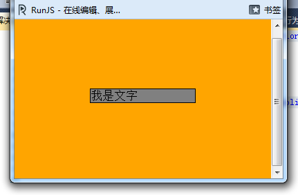
我不知道这张图能不能颠覆你一点点思维，我们这个代码与图至少证明：
① HTML是可以设置背景色的
② body是实际内容点，可以设置padding与margin
③ HTML也可以设置margin与padding
这里我们做一点点变化，将html的背景去掉：
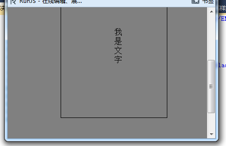
这种情况下body就不只是内容区域的颜色了，而是浏览器的。
好了，我们稍微研究了下html与body的背景色问题，我们现在来看看我们的body在默认情况下的表现。
1 <html xmlns="http://www.w3.org/1999/xhtml"> 2 <head> 3 <title></title> 4 <style type="text/css"> 5 body { background-color: Gray; border: 1px solid black;} 6 </style> 7 </head> 8 <body> 9 我是文字 10 </body> 11 </html>
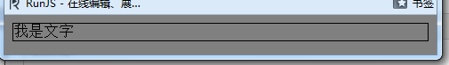
firefox
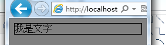
IE9
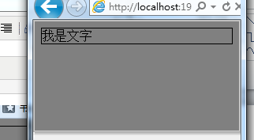
IE8，各位注意，这个和我们前面的已经有变化了，你们发现边框多了一点东西了吗？？？
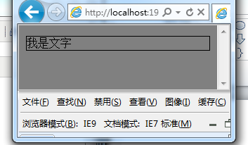
IE7，好家伙滚动条也出来了，这玩笑开大了。
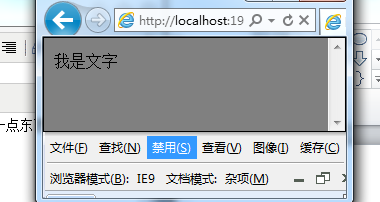
混杂模式下，边框全局化啦。
经过我们的简单研究，其它莫名其妙的东西我们先不管，我们就说IE8下多出来那个边框家伙（灰色的）是什么？？？
PS：这个是我们设置margin： 0都消除不了的哦
1 <html xmlns="http://www.w3.org/1999/xhtml"> 2 <head> 3 <title></title> 4 <style type="text/css"> 5 html { background-color: Orange; } 6 body { background-color: Gray; } 7 </style> 8 </head> 9 <body> 10 我是文字 11 </body> 12 </html>
我们看在这种情况下的截图：
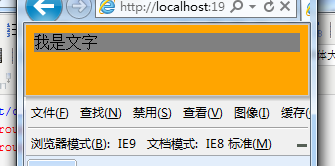
好吧，我就只好认为这是浏览器本身的问题了吧，先暂时不管他，因为我们要研究下其他问题。
body默认情况下的margin、padding、font-size
不知道这个各位研究过没，我反正没有研究过，所以来试试吧
经过研究我得到以下结论（有不对请一定指出）：
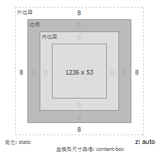
① body的padding为0
② body字体为16px（firefox）
③ 关于margin的值较麻烦一点
IE8/9 firefox google margin默认值为8px
在IE7下margin-left为10px，margintop为15px
所以我们需要设置margin: 0，作为css reset
PS：若是您想知道我是怎么测试的话可以看这段代码


1 <html xmlns="http://www.w3.org/1999/xhtml"> 2 <head> 3 <title></title> 4 <style type="text/css"> 5 html { background-color: Orange; } 6 body { background-color: Gray; } 7 div { background: none repeat scroll 0 0 white; left: 8px; margin: 0; position: absolute; top: 8px; } 8 </style> 9 </head> 10 <script src="../../jquery-1.7.1.js" type="text/javascript"></script> 11 <script type="text/javascript"> 12 $(document).ready(function () { 13 var dom = $('body'); 14 15 var s = ''; 16 17 }); 18 19 </script> 20 <body> 21 我是文字 22 <div> 23 我是文字</div> 24 </body> 25 </html>
我设置了一个绝对定位的div，然后慢慢定位其top与left，或者设置font-size一一对比
p与br
p是用于标记段落的，我们有一段话就应该使用p，而br单纯用于换行使用，不可与p同日而语
br默认margin、padding、width等全部为0
1 <html xmlns="http://www.w3.org/1999/xhtml"> 2 <head> 3 <title></title> 4 <style type="text/css"> 5 body { margin: 0; } 6 p { border: 1px solid black; } 7 div { background: white; left: 100px; margin: 0; position: absolute; top: 100px; } 8 </style> 9 </head> 10 <body> 11 刀狂剑痴叶小钗 12 <p> 13 刀狂剑痴叶小钗 14 </p> 15 <div> 16 刀狂剑痴叶小钗</div> 17 </body> 18 </html>
先来简单的看看我们p标签的表现吧：
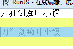
我这里基本可以得出一个结论，就是这个家伙只有margin值啦，于是经过测试我们知道了：
① p标签padding为0
② margin-left与margin-right为0，上下外边距为16px
PS：我这里可耻的发现了我找到了一个更好的东西佐证我的想法：就是本身提供的盒子模型啦。。。。
p的最小高度
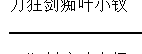
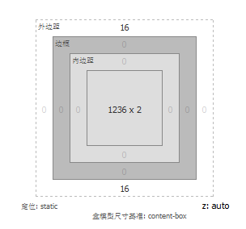
p应该是默认设置了min-height为2px啦
关于IE7下的z-index
我们的z-index在IE7以下容易出错，但是为什么呢？也许这里可以给你答案：
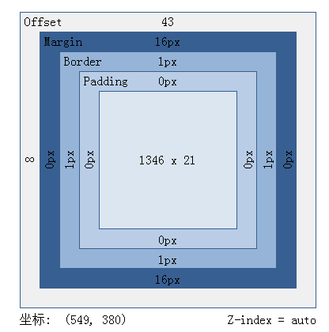
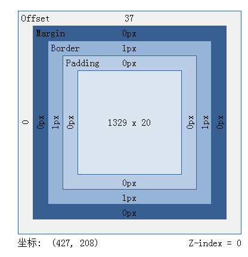
IE8+的浏览器z-index是auto，不会参与计算的，但是ie7以下就变成0啦。。。。
h1——h6
1 <html xmlns="http://www.w3.org/1999/xhtml"> 2 <head> 3 <title></title> 4 <style type="text/css"> 5 div { background: white; left: 100px; margin: 0; position: absolute; top: 100px; } 6 </style> 7 </head> 8 <body> 9 10 <h1>刀狂剑痴叶小钗</h1> 11 <h2>刀狂剑痴叶小钗</h2> 12 <h3>刀狂剑痴叶小钗</h3> 13 <h4>刀狂剑痴叶小钗</h4> 14 <h5>刀狂剑痴叶小钗</h5> 15 <h6>刀狂剑痴叶小钗</h6> 16 <div> 17 刀狂剑痴叶小钗</div> 18 </body> 19 </html>
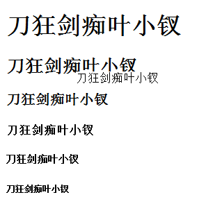
整个h标签标签在各个浏览器表现很不一致，这里我们一定要给其设置默认值，否则肯定会悲剧
h1
firefox：
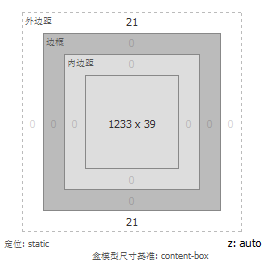
google：
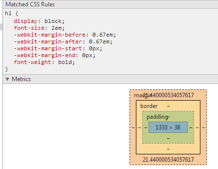
IE9：
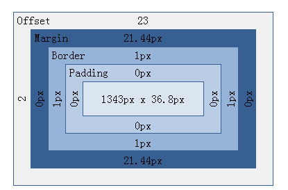
IE8：
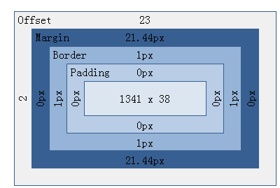
IE7（IE7更加悲剧，上面的margin就没显示出来）：
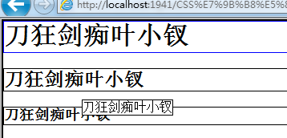
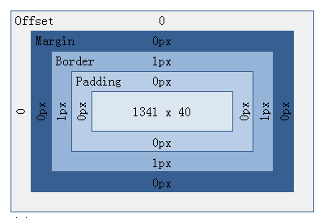
我们看到了就单单一个h1，的表现，从ie7到ie9，再到firefox到chrome都不一样，所以这个东西我们就不研究了，直接CSS RESET吧。。。
继续昨天的话题
一性圆通一切性，一法遍含一切法，一月普现一切水，一切水月一切摄。
我们接着昨天的写，昨天我们写到了h1——h6，然后单单一个h1各个浏览器就有所不同，然后把6个一起加起来的话......
6 * 5（IE6/IE7/IE89/firefox/chrome）就可能会出现30钟变化，所以研究他不吃好，我们碰到h后就直接CSS重置吧。
所以我们继续我们的学习吧
ul ol li
在firefox下，我们看看我们ul的表现：
1 <html xmlns="http://www.w3.org/1999/xhtml"> 2 <head> 3 <title></title> 4 <style type="text/css"> 5 ul { border: 1px solid black; } 6 body { margin: 0; } 7 div { background: white; left: 100px; margin: 0; position: absolute; top: 100px; } 8 </style> 9 </head> 10 <body> 11 <ul> 12 <li>刀狂剑痴叶小钗</li> 13 <li>刀狂剑痴叶小钗 14 <ul> 15 <li>刀狂剑痴叶小钗</li> 16 <li>刀狂剑痴叶小钗</li> 17 </ul> 18 </li> 19 <li>刀狂剑痴叶小钗</li> 20 <li>刀狂剑痴叶小钗</li> 21 </ul> 22 </body> 23 </html>
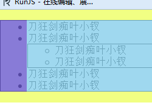
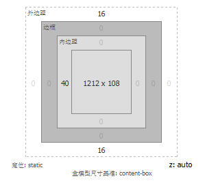
① 最外层外边距（margin）上下外边距16px
② padding-left为40px
③ 内层ul上下外边距就没有了，但是padding-left仍然是40px
④ li有list-type，其显示前面有一点点原点或者方块
⑤ li高为17px（这里font-size为16px，所以上下外边距的显示是0.5，在其他浏览器不太一致）
PS：
我认为li的line-height为17px
我们现在来看看chrome的表现：
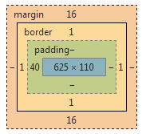
① 最外层margin上下边距为16px
② padding-left 为40px
兼容点：
① li line-height为18px
② 这里的ul完全是内部撑开的
现在我们来看看IE9：
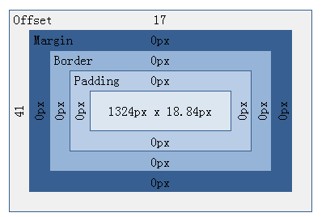
大家看到了，我们的不同点就是li所撑开的高度了，IE9的line-height应该是18.84
IE8：
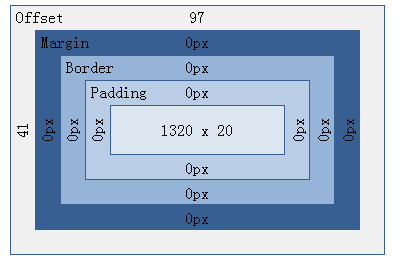
IE8的表现与IE9一致，但是li的line-height有所不同，说实话我都不知道他的20px哪里来的。。。
IE7
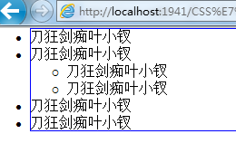
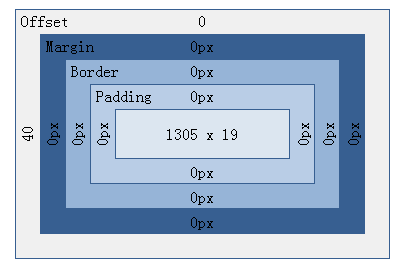
这个有两个地方不同：
① margin的外边距为0
② li的line-height为19px
总结
ol与ul表现一致，便不单独说了：
① 最外层外边距（margin）上下外边距16px
② padding-left为40px
③ 内层ul上下外边距就没有了，但是padding-left仍然是40px
④ li有list-type，其显示前面有一点点原点或者方块
差异：
① IE7下margin上下边距为0
② IE7下li 的line-height为19px
IE8下为20px
IE9为18.84
firefox为17
chrome为18
a标签/span
本来前面还想说hr标签的，想下先算了，因为平时很少用到，于是我们来看看我们的a吧(span与之表现完全一致)
他的尺寸意义不大，我们来看看其简单特性
未被访问的链接带有下划线而且是蓝色的 已被访问的链接带有下划线而且是紫色的 活动链接带有下划线而且是红色的 a伪类的顺序一般为：a:link、a:visited、a:hover、a:active： a:link {text-decoration: none;color: #FFFFFF} a:visited { text-decoration: none;color: #FFFFFF} a:hover { text-decoration:none;color: #000000} a:active {text-decoration:none;color: #000000} a:link - 普通的、未被访问的链接 a:visited - 用户已访问的链接 a:hover - 鼠标指针位于链接的上方 a:active - 链接被点击的时刻
记住我们的顺序是lvha，直译为lv（名牌包包），ha（好hao）
select option
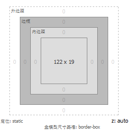
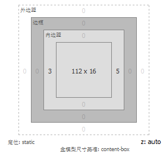
我们看到select默认高有所不同：
firefox：19px
chrome： 18px
IE9:17.33
IE8:20px
IE7：所占高度就变22px了
PS：其它浏览器边框表现一致，IE7边框颜色有所变化并且其边框为2px
select内部的字体也不同：
firefox默认为16px
但是chrome看不出是多少，接近14px
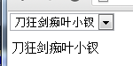
IE下是14px
select所占的整个尺寸差距不大，所占高度加上边框所占尺寸都相差不大，但是这个还是必须CSS RESET处理
img标签
经测试，各个浏览器其表现差不多，我们先不管他了。
input相关
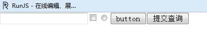
我们简单看看这些东西
关于文本框，他的border为2px，各个border的颜色不太一样。
padding 左右为1px 上下为0
对于checkbox，尺寸为13px，margin-left为4px，其它为3px
radio又有所不同，margin-left为5px，尺寸也是13px
按钮上又会有兼容性问题：
firefox外边距为0，边框为2px，内边距为6px，而chrome有所不同，其外边距全部是2px
而且firefox内边距上下为0，chrome为1
对于IE，莫名其妙的东西就更多了：
① 除去边框不说，checkbox与radio的外边距都为0
② padding的尺寸也各不相同，所以需要CSS RESET啦。。。
table
后面补上。。。。。。
结语
想不到这个博客的篇幅这么长，还比较耗费时间，今天拉肚子，坚持不住了，后面点补齐吧。。。。
若是文中有任何不足，请您指出。。